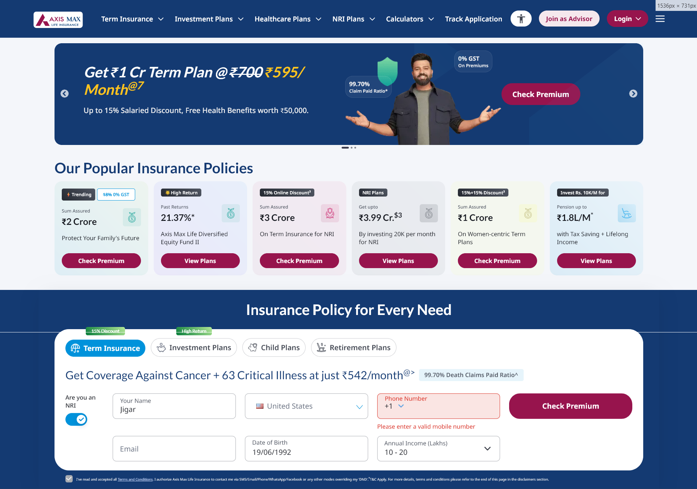

A redesign case study on axismaxlife — India's most-trusted life insurance company. We audited both screens, isolated every friction point, and rebuilt them with a measurable hypothesis behind each change. No guessing, no hand-waving — just the two folds that decide whether a buyer scrolls or bounces.
The first scroll is two missed opportunities back-to-back. A landscape carousel limits the user to one plan at a time. A row of bland cards beneath gives them no reason to click.

Most users bounce on the first fold — and this one gives them every reason to. There's no single, dominant offer to anchor on, no clear "this is the plan." Direct hit on bounce rate.
The CTA sits on the photo card at the far right edge — disconnected from the headline reading flow on the left. Eye doesn't travel there naturally; click-through suffers.
All five cards share the exact same layout: white panel · tiny line-icon · text block · CTA. No photography, no per-persona color, no visual cue. The "family" card looks identical to the "NRI" card to the "women's" card to the "pension" card — the only difference is the title text. Users scan in 1-2 seconds; they don't carefully read each panel. Without imagery that says "this card is for you" at a glance, the entire row produces zero recognition — and zero clicks.
It collects user data, but never gives anything back: no recommended cover, no live premium, and a headline that leads with disease instead of protection.
There's no live calculator that tells the user a recommended cover and monthly premium based on their household expenses. The new design does exactly that: move the slider → see "₹1 Cr cover at ₹595/month" update in real time. The old form has no such feedback — you just type and hope.
"Get Coverage Against Cancer + 63 Critical illness at just ₹542/month" leads with disease anxiety. The trust signal next to it — "99.70% Death Claims Paid Ratio" — literally mentions death. Aspirational framing ("protect what matters," "family security") converts better than fear-based copy for B2C buyers.
Same brand language, same offer, completely different reading rhythm. The price still anchors — as a punchline, not a coupon.
5-stop radial mesh (navy halo + magenta halo + amber warmth) + subtle SVG grain. Atmosphere without semantic noise. The sticky glass header now picks up real brand color.
₹700 appears → magenta strike draws across (550ms) → 400ms hold → ₹700 exits → 120ms clean gap → ₹595 spring-overshoots in. Only one price visible at a time.
4 green pills directly under the headline: 99.70% Claim Paid · 0% GST · Save ₹46,800/yr in tax · Free 15-day cancel. Was buried as floating chips on the photo at 11px.
Instead of dull plain-panel cards, the 4 cards now lead with full-bleed photography per persona — family · wealth · airplane · woman.
Same brand, completely different mechanic. The form now computes: slider + duration → live recommended cover and matching premium. Same number the hero claims. No more "trust the magic ₹542".
Slider for monthly expenses + duration buttons (10 / 15 / 20 / 25 / 30 yrs) compute a recommended cover and a live premium. Slider rounds to clean values (₹1 Cr · ₹1.2 Cr) and ₹1 Cr maps to ₹595/mo — matches the hero claim exactly.
Cover amount + monthly premium update live as the user drags the household-expenses slider. Reinforced with positive-benefit tags — 15% discount applied · 99.70% claims settled · tax saving up to ₹46,800/yr — so the card doesn't just quote a price, it justifies it. The slant "₹24/day · less than a chai ☕" reframes the premium as something trivially affordable — anchoring on a tea, not a bill.
Right under the price card, a row of condition chips — Cancer (all stages) · Heart Attack · Stroke · Kidney Failure · Major Organ Transplant · +59 more conditions. Instead of leading with disease in the headline (like the old page did), we surface coverage after the user has seen the price — turning the same medical list from a fear trigger into a value-proof. Same facts, opposite emotional sequence.
Tools change every quarter. The way you decide what's good doesn't.
Before any pixel moves: Does every label map to an action? Convert vs decorate? Where's the hierarchy? "STEP 1 OF 2" with no Step 2 dies on question one.
Use Claude for first-pass critique, animation timing, copy variants. Generate 6 options when you're stuck — you still pick. Taste calls stay human.
Indian B2C insurance buyers convert on dense, loud, price-led pages — not Apple-minimal ones. Spend 30 min on the actual market.
Each projection ties to a specific UX move — so when the A/B comes back, we know which change moved which dial.
Why: Primary CTA now anchors the headline reading flow (was buried on the photo card). Price-reveal animation creates a hook moment users actually wait for.
Why: Persona cards route directly to the right calculator (utm_theme params). One click replaces "scroll → switch tab → read header → fill form."
Why: Live cover/premium feedback as users move the slider rewards interaction. NRI default-off cuts 4 irrelevant fields for 88-92% of users.
Why: "99.70% claim paid" + "0% GST" promoted from 11px floating chips on the photo to a 4-pill row + 4-tile bottom strip — visible at first scan.